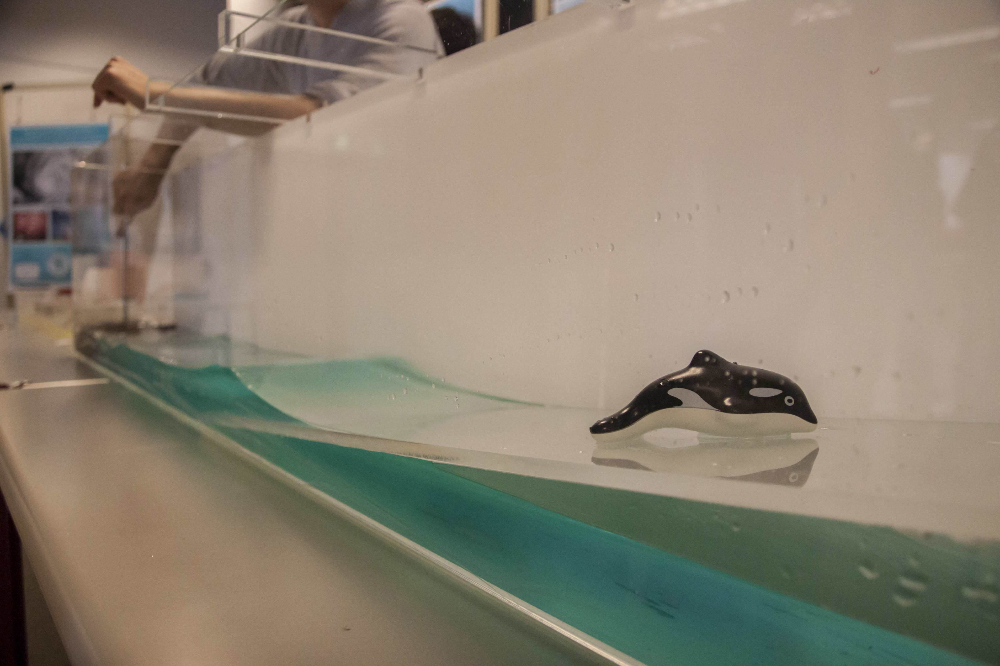
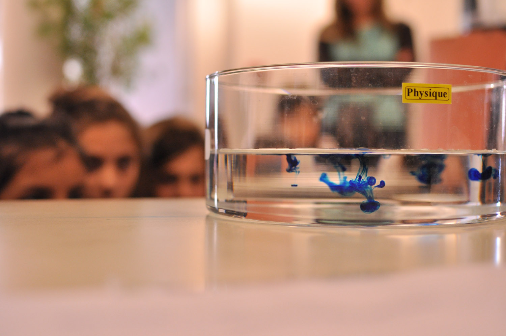
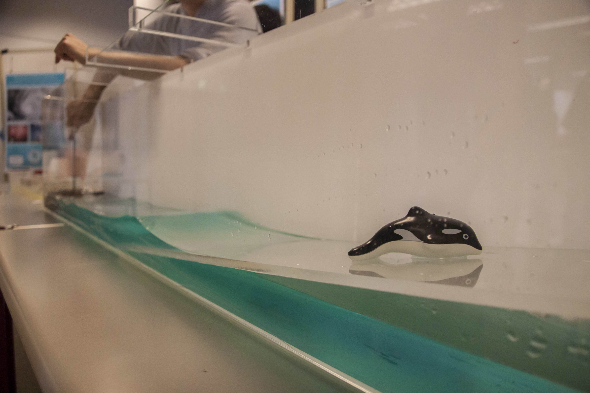
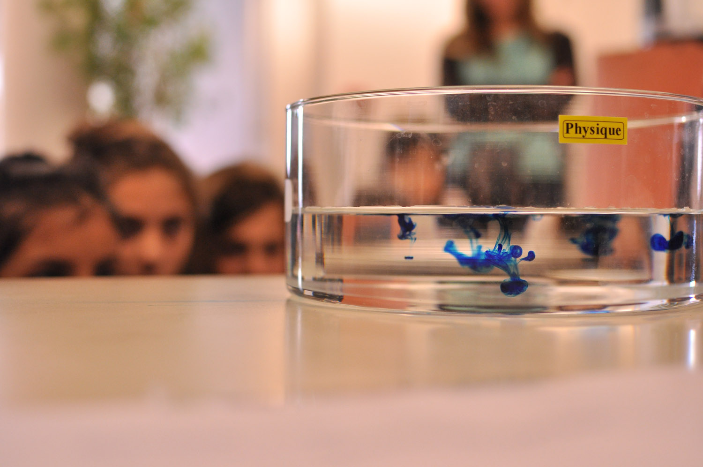

Marine LASBLEIS
Research interests
I'm interested in the dynamics of the interior of planets, and its evolution since the planetary formation, with a particular interest to the planetary cores and the evolution of the magnetic field.
During my PhD, I have studied the dynamics in the Earth's inner core and its relationship with the Earth thermal and chemical history. In my post docs, I am studying the effect of melts and co existence of melts and solids on the dynamics of deep Earth. This is particularly interesting for the inner core formation and for the magma ocean evolutions. I have also started to explore the thermal and chemical history of other planets in the solar system and outside. I am working with astronomers looking at exoplanets to try to understand the link between atmosphere and internal properties of planets.
ELSI, my institute, has funds to invite researchers and students interested in ELSI's topics (Earth's formation, evolution of early Earth and early life) to collaborate with ELSI researchers. Contact me if you are interested.
I have ongoing collaborations with: John Hernlund (Tokyo Tech), Kei Hirose (Tokyo Tech), Matthieu Laneuville (Tokyo Tech), George Helffrich (Tokyo Tech), Ramon Brasser (Tokyo Tech), Elizabeth Tasker (JAXA), Renaud Deguen (Lyon), Stéphane Labrosse (Lyon), Lauren Waszek (Univ. New Mexico / ANU), Elizabeth Day (Imperial College London).
Work
ELSI Research Scientist at Earth-Life Science Institute (Tokyo Institute of Technology, Tokyo, Japan)
JSPS Fellowship FY2015 at Earth-Life Science Institute (Tokyo Institute of Technology, Tokyo, Japan)
PhD at Laboratoire de Geologie de Lyon, Ecole Normale Superieure de Lyon, France. "Dynamique et evolution de la graine terrestre" (dynamics and evolution of the Earth's inner core) with Stephane Labrosse. Details (research and teaching)
Research papers
2017
GrowYourIC: a step towards a coherent model of seismic structure, M. Lasbleis, L. Waszek, E. Day. in press at Geochemistry, Geophysics, Geosystems LINK Associated Python toolbox on Github
The language of exoplanet ranking metrics needs to change, E. Tasker, J. Tan, K. Heng, S. Kane, D. Spiegel, R. Brasser, A. Casey, S. Desch, C. Dorn, J. Hernlund, C. Houser, M. Laneuville, M. Lasbleis, A.-S. Libert, L. Noack, C. Unterborn & J. Wicks. Nature Astronomy, 1 (2), 0042. Arxiv link Nature website
2015
Building a regime diagram for the Earth's inner core, M Lasbleis, R Deguen, Physics of the Earth and Planetary Interiors, 247, 80-93.
Earth's inner core dynamics induced by the Lorentz force, M Lasbleis, R Deguen, P Cardin, S Labrosse, Geophysical Journal International, 202 (1), 548-563. Paper
2013
Sharp hemisphere boundaries in a translating inner core, ZM Geballe, M Lasbleis, VF Cormier, EA Day, Geophysical Research Letters 40 (9), 1719-1723.
2010
Experimental study of libration-driven zonal flows in a straight cylinder, J Noir, MA Calkins, M Lasbleis, J Cantwell, JM Aurnou, Physics of the Earth and Planetary Interiors 182 (1), 98-106.
ELSI activities
If you don't know ELSI yet, have a look here. ELSI is the Earth-Life Science Institute, a WPI Institute in Japan dedicated to understand how the Earth and Life evolved. We are looking at the early times of Earth, its formation and early evolution, and the early days of life on Earth, and how everything is coupled. Since life is one of the many things that make the Earth unique, we are also interested in comparisons with other planets! ELSI is hosting and organizing symposium, workshops and other activities.
I was involved in the organization of the 5th ELSI Symposium, and I organized a full day event for young researchers, the Young Researchers Day. I am now in the organization team of the first ELSI/EON Winter School.

Scientific communication (mediation scientifique)
This year, I presented my research topics during several events destinated to a general audience: the ELSIOriginsI event (pictures and video soon to be uploaded) and during Nerd Nite Tokyo (Facebook page here)
For people that can read French, I am also involved in a new blog on the structure/composition/dynamics of the interior of planets, with a particular focus for the magnetic field. It's called "Tout là bas en dessous".
As a PhD student, I gathered a small team of students (master and PhD students) to design small experiments for explaining oceanography and basic fluid dynamics. We presented them to schools and highschool students, as well as undergrad students. We also participated to the French "fete de la Science" (2011, 2012, 2013) and had a lot of fun playing with water and science!
 
Contact
marine[dot]lasbleis(at)elsi{dot}jp
Earth-Life Science Institute
2-12-1-IE-1 Ookayama, Meguro-ku, Tokyo, 152-8550, JAPAN Tokyo Institute of Technology
Github account: MarineLasbleis
Up-to-date CV (uploaded April 2018) CV